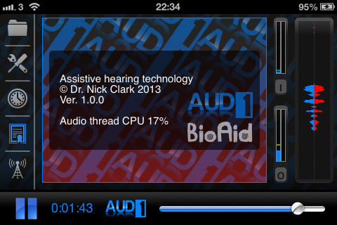
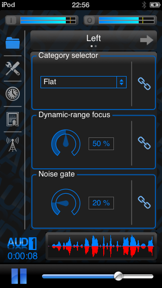

Universal Device Support
The AUD-1 app is designed for universal support of iOS devices running iOS 5 or newer. It has been carefully designed to utilize the space on devices with 3.5" displays, while being fully optimized to utilize the extra space available on newer devices with 4" displays. It also supports iPad resolution and retina display technology, so if you’ve downloaded the app on one device, you will be able to use it on all of your iOS devices without the need to purchase a separate “HD” version.
3.5" Retina
 |
 |
4" Retina
|  |
 |
iPad
Due to the computationally intensive nature of real-time digital signal processing, the best performance can be obtained with the newest generation devices. These include the iPad 2, the new iPad, the iPad mini, and iPhone 4, 4S and 5. With these devices, a lower sample buffer size can be used, resulting in lower latency audio. AUD-1 is also compatible with the iPod Touch family of devices capable of running iOS 5 or greater.